エリア担当者向け
9月29日・30日の更新分のまとめ ／ 2026年9月30日 ワンズスタイル本部（髙橋）
| 画面 | 変わったこと | 配信 | ページ |
|---|---|---|---|
| 送迎表 | 「この週を完成にする」と完成後の変更の赤丸（●）／未割当の方の「移動先」選択／前週コピー・提供記録の振替の反映／お迎え時間の計算の精度 | 全店 | 2 |
| お迎え時間の表示 | ご家族・ケアマネ画面に「本日／次回のお迎え時間」、完成後の変更のお知らせ | 全店 | 3 |
| 災害速報 | 事業所の地域に関係する速報だけを表示 | 全店 | 3 |
| サービス提供記録入力 | 血圧・脈の「再」測定／個別機能訓練の実施担当とグループ分け | 全店 | 4 |
| 日誌 | 必須職員の未選択チェック（兼務・減算）／送迎表取込／ボタンの並び | 全店 | 5 |
| 連絡帳 | 空印刷／印刷位置の微調整／利用者ごとの値 | 全店 | 6 |
| モニタリング | 確定したらすぐケアマネ画面へ／ケアマネ閲覧済の表示とFAXの省略 | 全店 | 7 |
| ご家族・ケアマネの登録 | 画面プレビュー／招待コードの安全対策／登録メールの反映 | 全店 | 8 |
| 各種設定 | 担当職員を役職ごとの枠に／気分の入力ON/OFF／血圧・脈の測り方 | 全店 | 8 |
| 送迎表の画面整理ほか | 自動計算の選択式・完成のリマインド・待ち合わせ場所の選択式 など | 試験版 | 9 |
| 不具合の修正 | 9/29・9/30に直した主な不具合 | 全店 | 10 |
| 店舗から聞かれそうなこと | Q&A | 11 |
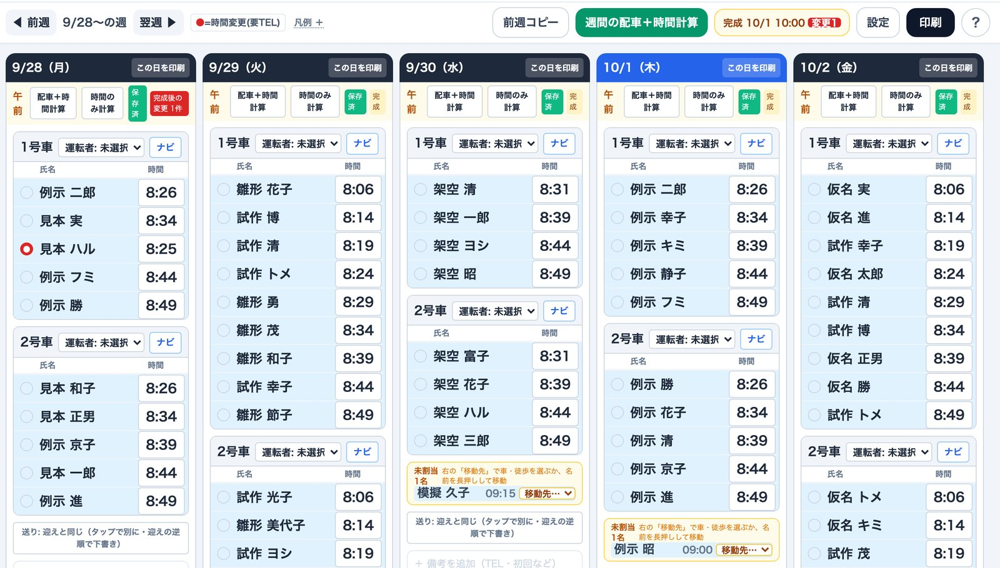
9月30日より前に計算した週でお迎え時間が早すぎる方がいたら、その日の「時間のみ計算」を押し直してもらってください（待ち合わせ場所の影響で移動時間が長く出ていた不具合を直しました）。
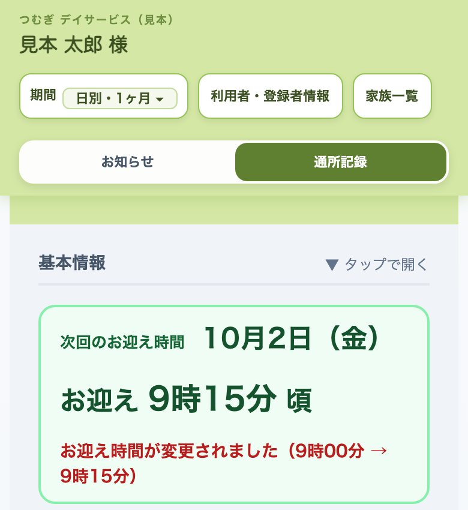
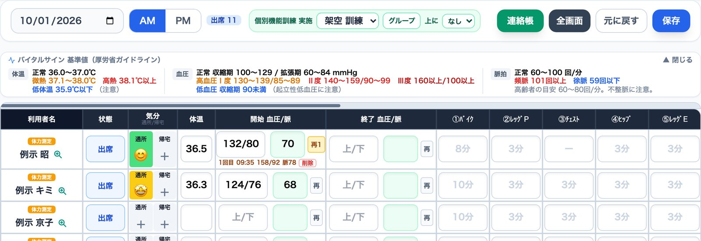
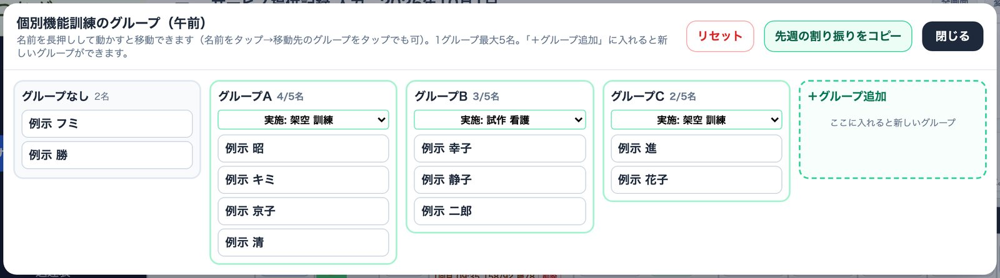
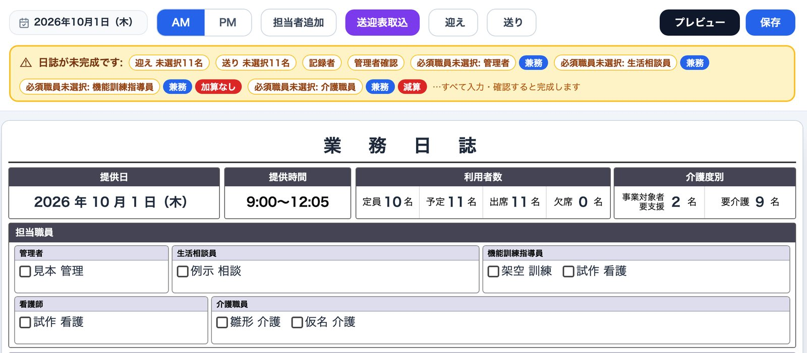
「必須職員未選択」が出たら、まず担当職員のチェック漏れがないかを確認し、本当に不在だった日だけ「減算」「加算なし」を押すようお伝えください。
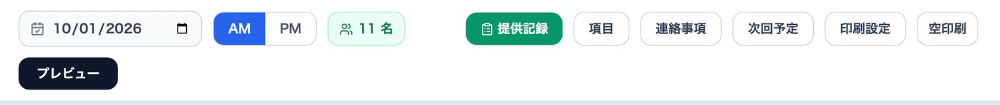
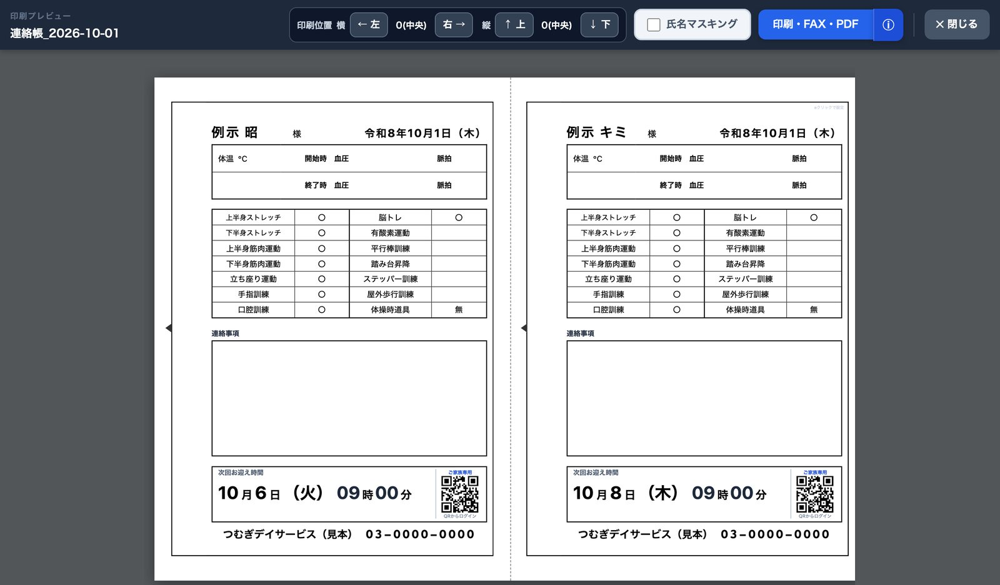
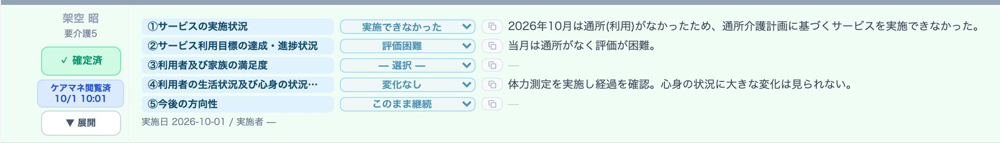
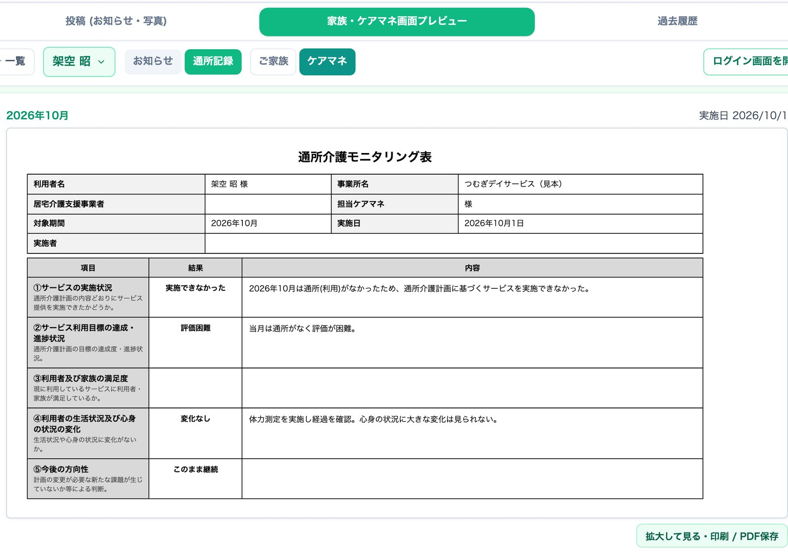
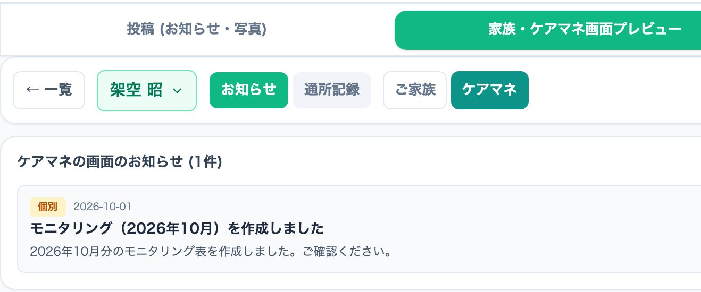
つむぎに登録済みのケアマネには、確定と同時に表が届きます。閲覧済みになった方はFAXを省けますが、まだ見ていない方には従来どおりFAXを送ってください。
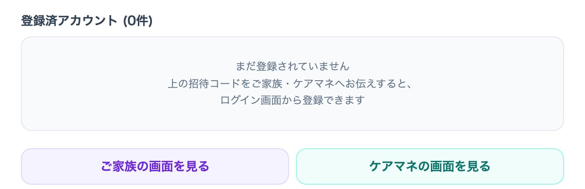
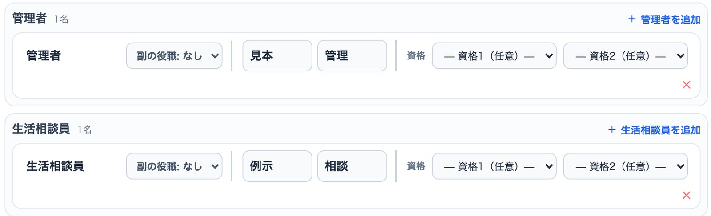
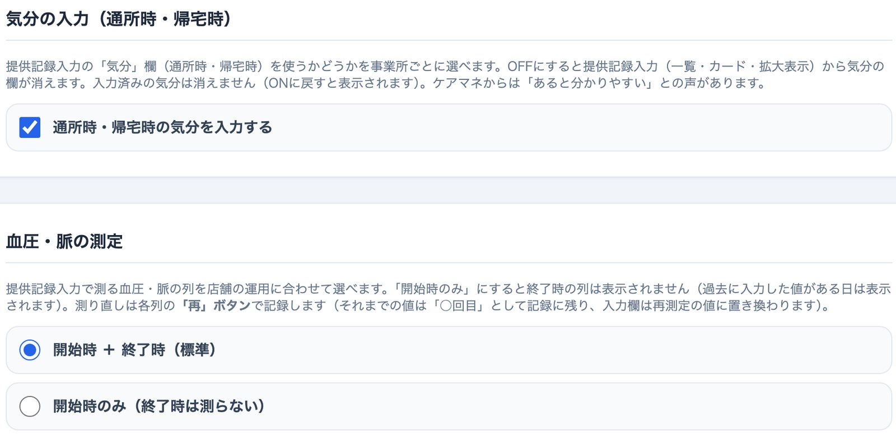
扇橋店で確認中です。全店への配信日は本部からご連絡します。
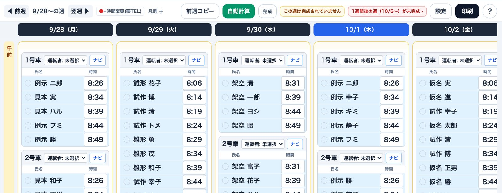
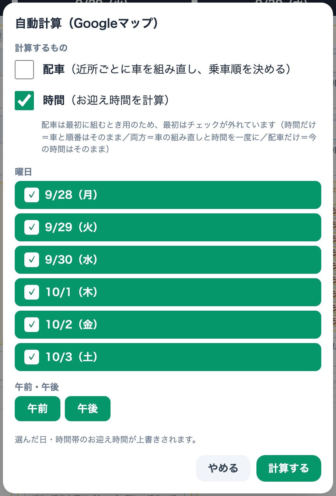
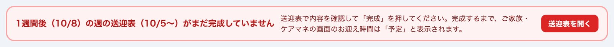
| 日付 | 画面 | 内容（→ 直したこと） |
|---|---|---|
| 9/30 | 送迎表 | 待ち合わせ場所（玄関前など）が入っている方の移動時間が大きく狂い、お迎え時間が早すぎた → Googleへは住所だけを送る |
| 9/30 | 送迎表 | 「前週コピー」で前の週に振替で来た方までコピーされた → コピー先に来る方だけ残す |
| 9/30 | 送迎表 | 提供記録で振替・臨時にした方が、月間スケジュールに印が無いと出なかった → 提供記録の振替・臨時・欠席・休止を反映 |
| 9/30 | 連絡帳 | 午後の方の体温・血圧に午前の値（入力途中の「36.」など）が出た／印刷でバイタル欄の1行目が右にずれた → 修正 |
| 9/30 | 利用者マスタ | 緊急連絡先で同じ方が2回表示された → 氏名で1件にまとめて表示 |
| 9/30 | 日誌 | 欠席・休止の方に車の割り当てが残ると、送りの車がグレーアウトされず「未完成」になった → 修正 |
| 9/30 | モニタリング | 実施日が下書きを作った日のままだった → 確定した日に／月の途中で休止にした方が一覧に出なかった → 修正 |
| 9/30 | 災害速報 | 事業所の地域に関係のない速報が全店に出ていた → 地域で絞り込み |
| 9/30 | お迎え時間 | 送迎表の「分」が空欄のとき「13時頃」と出た → 「13時 分」と表示 |
| 9/30 | ご家族・ケアマネ | 初めてログインした端末で、登録前のお知らせまで未読（「お知らせ 3」など）になった → 修正 |
| 9/30 | ケアマネ連携 | 交代後も前任ケアマネのアカウントが残った／同じメールを使うケアマネ同士で担当を取り違えた → 修正 |
| 9/30 | ご家族の登録 | アカウント管理から出した招待のQRで登録すると「データを取得中」から進まなかった／新しい端末で登録すると続柄・電話が事業所に届かなかった → 修正 |
| 9/30 | ケアマネの登録 | 招待で事業所が決まっているのに「事業所を選択してください」で登録できなかった → 修正 |
| 9/30 | ホーム画面のアプリ | 招待用紙などの印刷画面から元の画面に戻れなかった → 画面の上に重ねて表示し「← 閉じる」で戻れるように |
| 9/29 | 休み連絡 | プレビューから印刷・FAX・PDFをしてもカレンダーが「連絡済」にならなかった → 修正（送付状に「連絡済にする／取消」ボタン） |
| 9/29 | 提供記録の印刷 | 月間表（A4横）の上と左右が見切れた → 用紙の内側に余白／個別運動の単位が二重（500gg など）→ 修正 |
| 9/29 | 分析 | 介護度内訳の合計が100％にならなかった → 未設定を表示し合計100％に |
| 9/29 | 家族画面プレビュー | 利用者を切り替えても最初の利用者のままだった → 修正 |
| 9/29 | 月間スケジュール | 月間スケジュールと提供記録入力の連動（振替・臨時・欠席 × 午前/午後）を総当たりで確認し、振替先の表示などを修正 |
不具合・要望は、店舗から本部（髙橋）へ直接ご連絡ください。画面の写真を添えていただくと早く直せます。